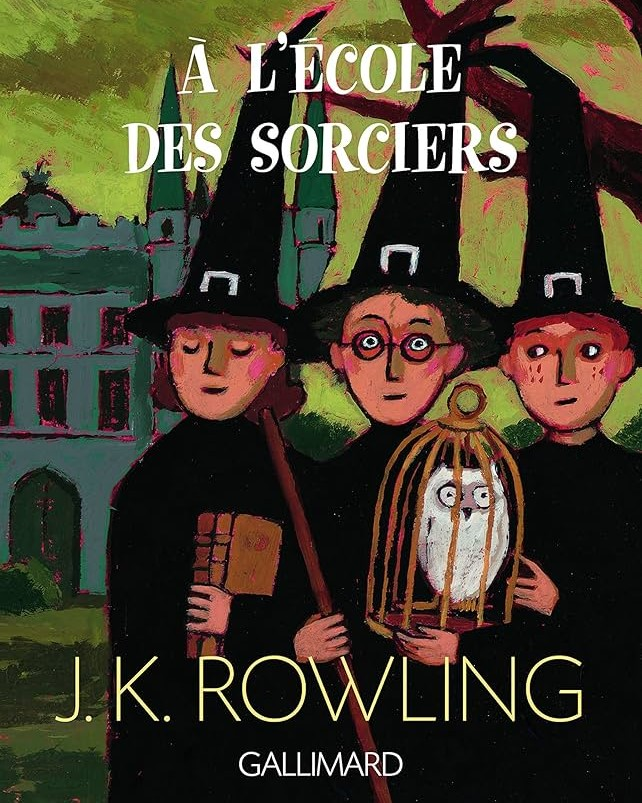
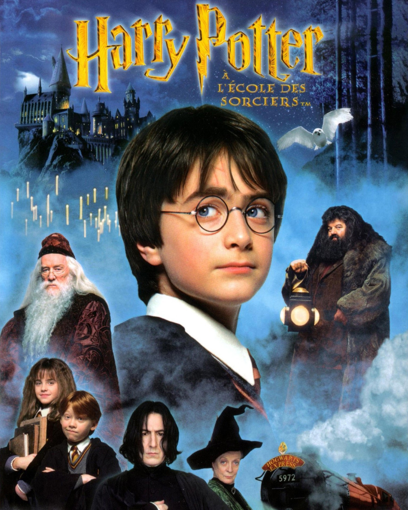
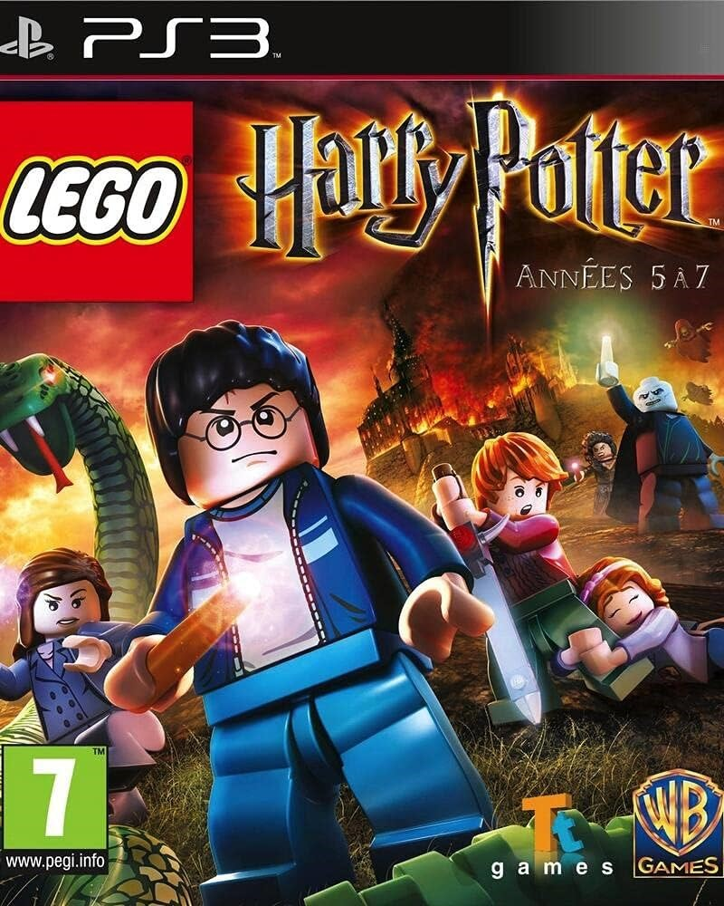
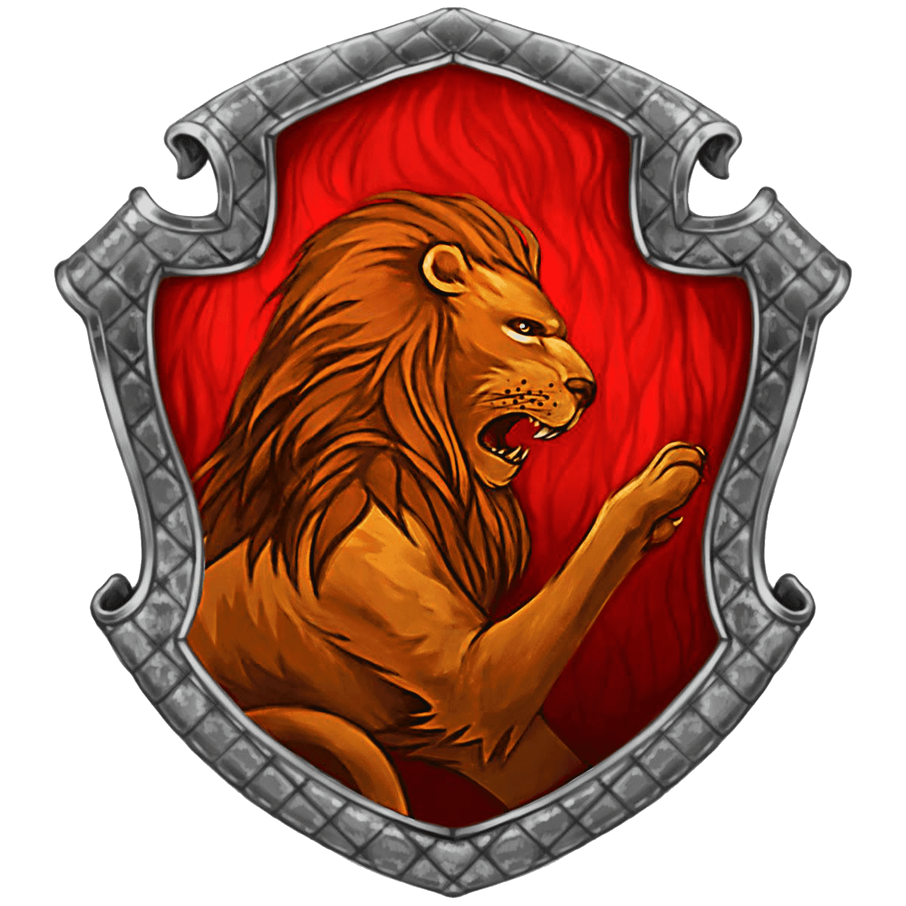
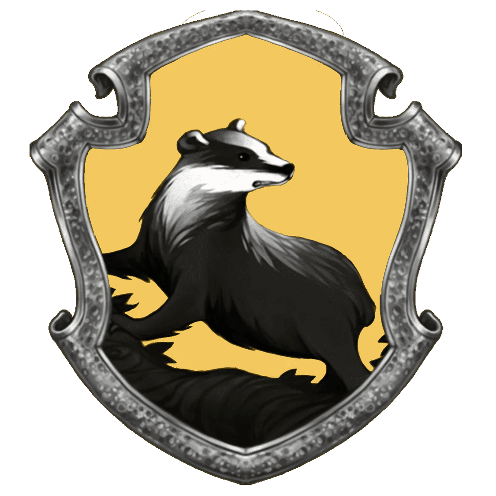
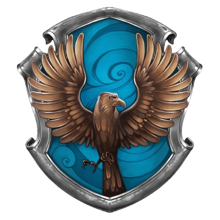
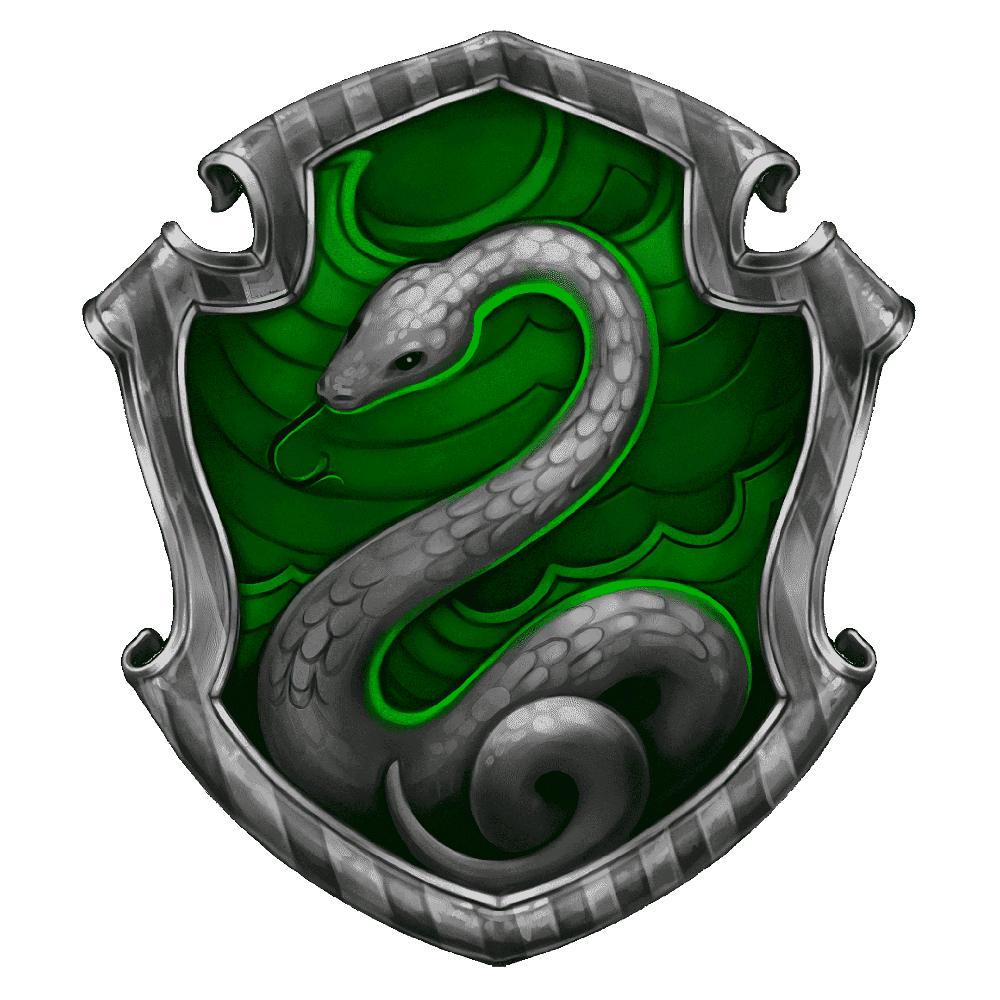

Pourquoi Harry Potter?
Présentation
Harry Potter est une série littéraire de fantasy écrite par J.K.Rowling. Cette saga raconte les aventure d'un jeune sorcier nommé Harry Potter et de ses amis Ron Weasley et Hermione Granger à l'école de sorcellerie Poudlard. L'intigue principale met en scène le combat entre Harry et Lord Voldemort, le plus terrible mage noir de tous les temps.
Livres
L'histoire est découpée en sept romans représentant chacun une année de la vie de Harry. Elle débute durant l'été 1991 et se termine en Mai 1998.
Films
Les sept romans ont été adaptés au cinéma par le studio américain Warner Bros en huit films (le septième roman ayant été divisé en deux parties). La saga fait partie des plus lucratives de l'histoire du cinéma avec 7,7 milliards de dollars.
Dérivés
Avec l'engouement autour des livres et des films, beaucoup de produits dérivés sont apparus. On peut citer entre autres des jeux vidéos, des collectibles divers, mais surtout des livres et films spin-off comme la saga des Animaux Fantastiques ou la pièce de théâtre L'enfant Maudit, mais aussi un parc d'attractions en Floride, et bien d'autres choses.
Personnages principaux

Harry Potter est un garçon timide et modeste. Il fait partie de la maison Gryffondor à l'école de sorcellerie de Poudlard, où il excelle en défense contre les forces du mal. Il est orphelin depuis que Lord Voldemort a tué ses parents et a tenté de le tuer lui même, sans succès, en lui laissant un cicatrice en forme d'éclair. Il est incarné au cinéma par Daniel Radcliffe.
Harry Potter est un garçon timide et modeste. Il fait partie de la maison Gryffondor à l'école de sorcellerie de Poudlard, où il excelle en défense contre les forces du mal. Il est orphelin depuis que Lord Voldemort a tué ses parents et a tenté de le tuer lui même, sans succès, en lui laissant un cicatrice en forme d'éclair. Il est incarné au cinéma par Daniel Radcliffe.
Hermione Granger est une fille venant d'une famille de moldus. Elle fait partie de la maison Gryffondor à l'école de sorcellerie de Poudlard. C'est une madame je-sais-tout qui adore passer son temps à la bibliothèque, la tête dans des livres. Ses connaissances ont sauvé la mise de ses amis un bon nombre de fois. Elle est incarnée au cinéma par Emma Watson.
Lord Voldemort est l'antagoniste principal de la saga. Incroyablement intelligent et doué en tout type de magie, il part en quête de l'immortalité ce qui le plonge dans la magie noire. Il tue les parents de Harry et essaie de le tuer, mais le sortilège se retourne contre lui et depuis il tente de regagner son pouvoir et de se venger. Il est incarné au cinéma par Ralph Fiennes.
Mon avis
Ayant grandi en même temps que les personnages, les livres et films étant sortis pendant mon adolescence, je suis devenu fan directement après ayant vu le premier film. L'univers incroyable qu'a créé J.K.Rowling est complet, avec des personnages différents et hauts en couleurs, et que l'on soit adolescents ou adultes, on s'y attache facilement et on vit leurs aventures avec eux. Et comme dirait l'autre : "Always!".
-



